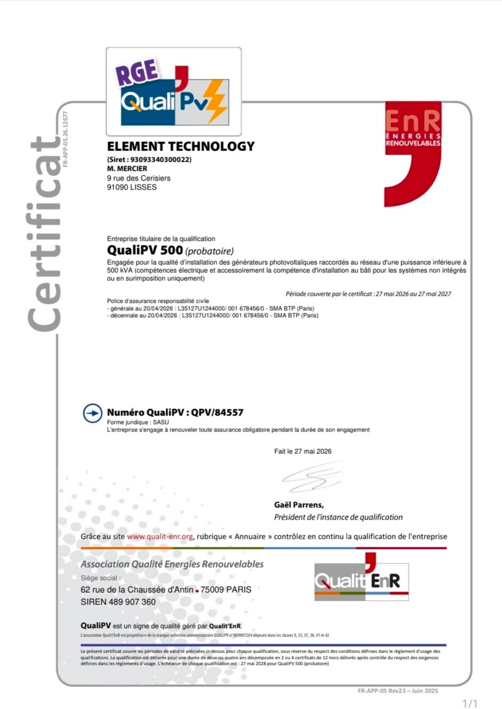

Certification
RGE PV500 : un gage de qualité et de sérieux.
Certification RGE PV500 : un gage de qualité et de sérieux.
ELEMENT Technology est fière de détenir la certification RGE PV500, délivrée par Qualit'EnR. Cette qualification atteste de notre expertise et de notre savoir-faire dans la conception, l'installation et la maintenance de systèmes photovoltaïques.
Elle garantit le respect des normes techniques les plus exigeantes, une démarche qualité rigoureuse et un haut niveau de professionnalisme. Grâce à cette certification, nos clients bénéficient d'un accompagnement fiable, de travaux réalisés dans les règles de l'art et de la possibilité d'accéder aux aides financières de l'État : MaPrimeRénov', prime à l'autoconsommation, TVA réduite, etc.
Chez ELEMENT Technology, la certification RGE PV500 reflète notre engagement quotidien pour une transition énergétique responsable et performante.